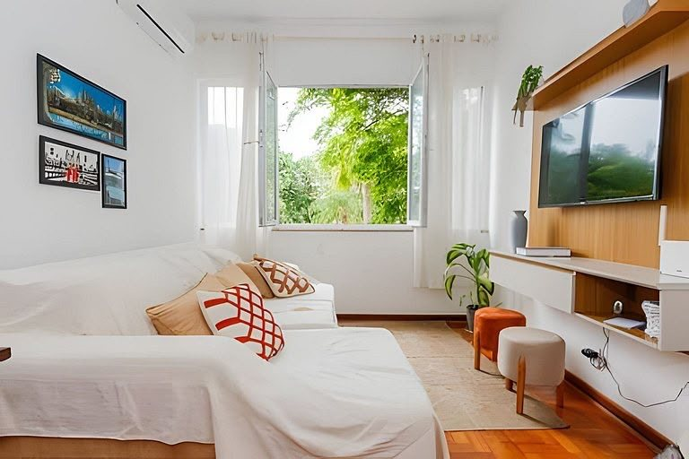
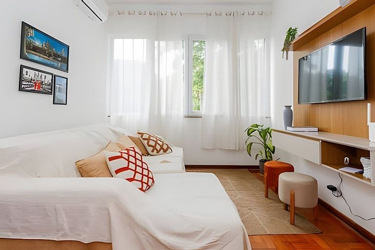
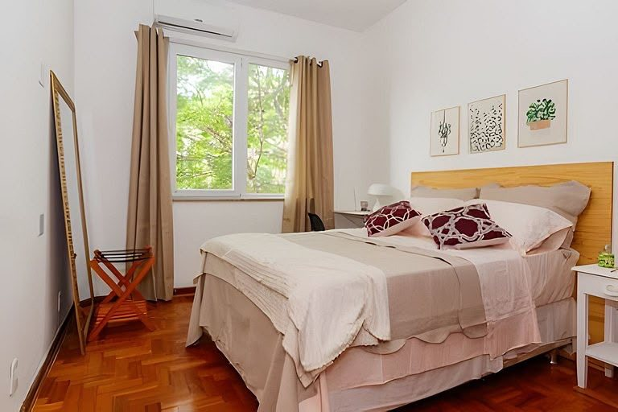
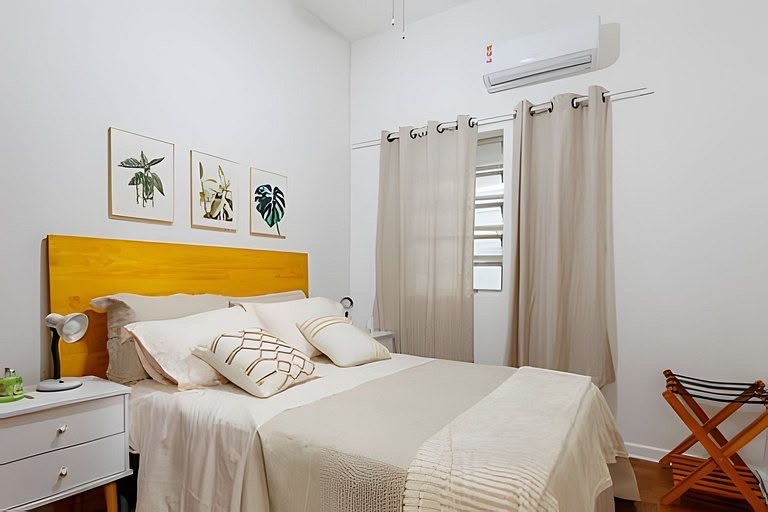
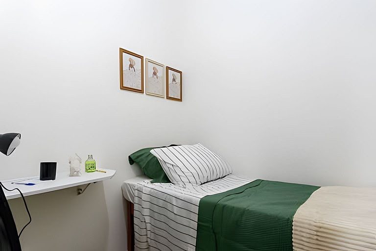
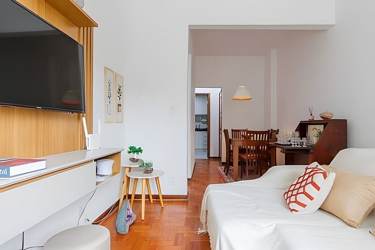
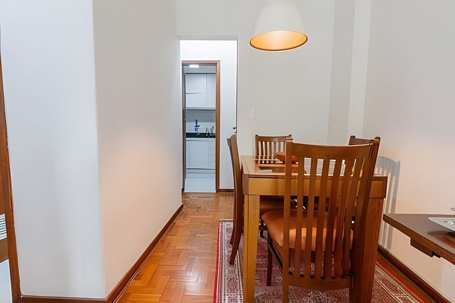
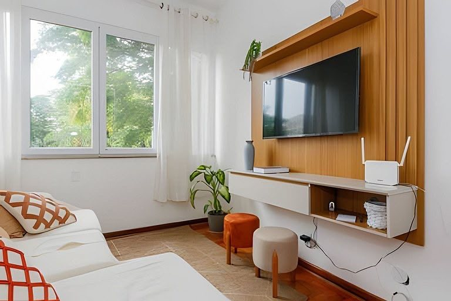
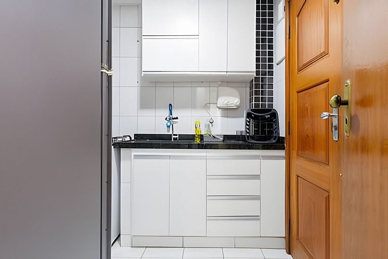

PROPUESTA DE ALOJAMIENTO

Apartamento de 3 dormitorios
en Leblon
Luminoso, tranquilo y con vista a los árboles, en una de las zonas más lindas y seguras de Río: cerca de la playa de Leblon, del Jardim Botânico y del Shopping Leblon.
02 → 12de enero
10noches
5personas
3dormitorios
VALOR TOTALR$ 11.900
10 noches para 5 personas · ropa de cama y toallas incluidas
Fotos








El apartamento
- Dormitorio 1: cama de matrimonio, aire acondicionado, blackout y ventanas antirruido
- Dormitorio 2: cama de matrimonio, aire acondicionado, blackout y ventanas antirruido
- Dormitorio 3: cama de una plaza, ventilador y blackout (cuarto más compacto)
- Living con Smart TV de 43", aire acondicionado y ventanas antirruido
- Cocina completa: horno, heladera, microondas, sandwichera, licuadora y utensilios
- 1 baño completo + 1 toilette
- Lavadero con máquina de lavar
- Wi-Fi de fibra de 500 Mbps
- Ropa de cama y toallas incluidas
Ubicación
- Leblon, límite con Gávea, junto al Jardim Botânico
- Cerca de la playa de Leblon y del Shopping Leblon
- Restaurantes, bares y supermercados alrededor
Reserva
Cómo reservar: se confirma con el 50% del total, por Pix o tarjeta (con tarjeta +5%). El resto, antes del check-in.
Fechas: entrada el 02/01/2027 y salida el 12/01/2027 (10 noches). Enero es temporada alta: recomendamos reservar cuanto antes.
Reservar por WhatsApp
Fechas: entrada el 02/01/2027 y salida el 12/01/2027 (10 noches). Enero es temporada alta: recomendamos reservar cuanto antes.